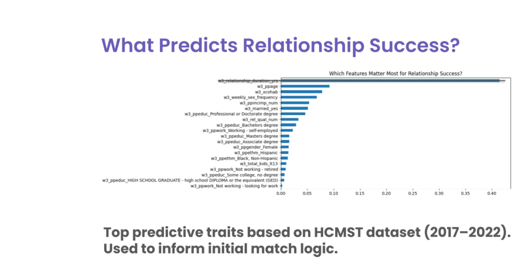
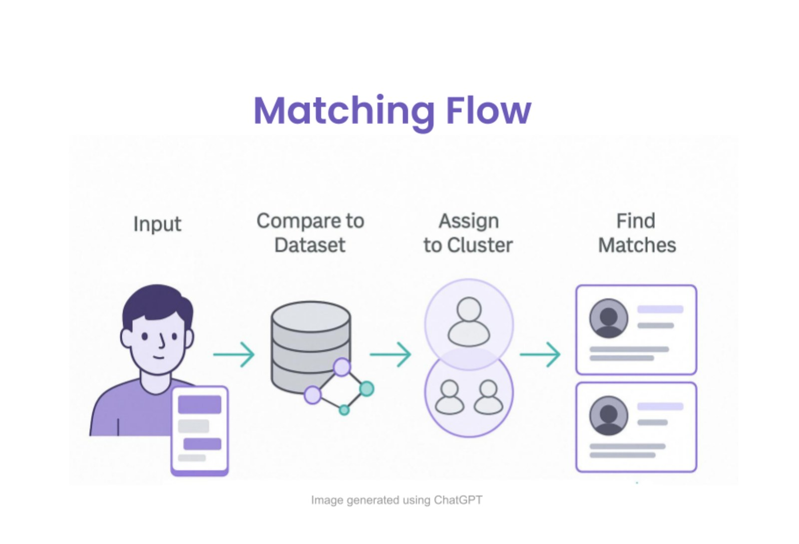
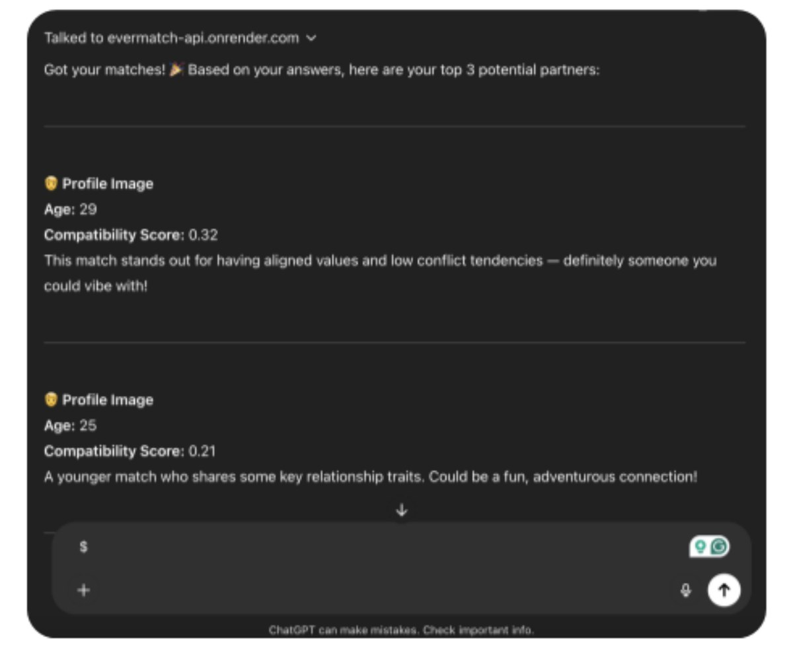

- The product question. I moved from predicting compatibility to exploring a useful conversational interaction.
- The use of data. I recognised that an established-couples dataset could not directly validate first-meeting recommendations.
- The next design. Early privacy concerns informed a concept that would introduce questions gradually.
Case Study
EverMatch
Reframing an AI dating concept.
An exploratory MSc project that moved from a matching prototype toward a conversational concept after dataset exploration and early privacy concerns. I used AI assistance to explore the idea and prototype interactions, reframing the product question around usefulness and privacy.
01
The starting point
Dating apps often ask for profile information before a user can explore the service. I wanted to investigate whether a conversational approach could offer a different way to learn about a person’s preferences. That was a design question, not an established claim that AI could predict compatibility.
The opening question — what can AI actually contribute to matching that the existing paradigm can't? — broke into three sub-questions:
- Which traits actually predict relationship success?
- Can a model learn those traits from conversation rather than forms?
- And can the result feel like guidance, not surveillance?
02
What the data says
To find an empirical floor, I used the Stanford HCMST dataset (2017–2022) — the longitudinal How Couples Meet and Stay Together study, which tracks paired couples and what stays paired across waves of the survey.
An exploratory feature-importance pass, supported by AI tools, considered factors associated with couples remaining together. This was not a validated compatibility model: feature importance does not establish causation, and results depend on the data and modelling choices.
What the dataset couldn't tell me was anything about the early-stage compatibility question — what predicts a first meeting going well, before there's enough shared history to measure. Most of the strong predictors require time. The matching question and the survey design didn't fully overlap.
"I wouldn't use any chatbot to speak about anything private, just because there's no easy way to guarantee the security of your data." — Initial user research (n=9, MSc 2025)

HCMST dataset (2017–2022). Relationship duration dominates as a predictor of couples remaining together — but it requires history to measure, which the early-compatibility question doesn't have.
03
Prototype one
The first prototype was a match engine: collect user traits via a GPT-driven form, embed them, cluster the user against the existing user base, and surface the nearest neighbours as candidate matches.

What the prototype taught:
- Comparing answers works, but lacks nuance.Two users who described their politics, hobbies, and weekend habits in similar terms scored as a match. Whether they would actually enjoy each other's company was invisible to the system.
- Personality and intent are invisible to structured data.The dataset's strongest predictors required relationship history. The application context — strangers being matched for a first meeting — has no history yet. The data-driven floor was lower than it looked.
- Users were sceptical of sharing enough to train better.Privacy worries weren't theoretical. Asking for the depth of data that might have made the matching genuinely better hit immediate resistance.
The first prototype helped me explore the interaction, but did not validate matching quality. The mismatch between the dataset and the product question, together with privacy concerns, prompted a different direction.

04
The pivot
The pivot took the question from "how do we match people more accurately?" to "what could AI usefully do for someone dating?" — and the answer changed.
Three reference patterns informed the next concept:
- Learn before recommending. A matchmaking service suggested a possible pattern: understand someone’s needs before proposing an option.
- Consider behaviour alongside stated preferences. Recommendation services suggested a question worth testing: could interaction history add useful information?
- Ask about outcomes. Post-date feedback suggested a way to check a recommendation against what happened. Whether this would improve trust remained untested.
I shifted the concept toward a conversational companion that could ask about preferences over time. The proposed matching component became secondary. The next question was whether people would find that interaction useful and comfortable.
05
Prototype two
The second concept uses conversation rather than an upfront form. It proposes learning preferences over time and introducing recommendations later. Those are intended behaviours for evaluation, not demonstrated capabilities.
Three deliberate moves:
- Let the user ask, not just receive. The companion is reactive to user-initiated questions ("what should I be doing differently?", "should I message back tonight or in the morning?"), not just a top-down recommender.
- Earn trust before it's spent. The first sessions focus on listening — what dating actually feels like for this user right now, what worked and what didn't. Matching is held back until the user wants it.
- Focus on what users do, not what they say. Sentiment after dates, frequency of conversation continuation, follow-through on suggestions — all of it observable, all of it richer than form data.
Reducing form fields would not by itself make this approach private: conversations and inferred preferences can also be sensitive. Consent, data minimisation and a clear explanation of what is inferred would need to be designed and tested.
06
What changed, what remains open
The project produced a revised product direction and a set of questions for further evaluation.
- Usefulness and trust. Would people prefer the conversational approach, and under what conditions?
- Matching quality. There is no validated comparison demonstrating better compatibility.
- Privacy and sustained use. Consent, inference, retention and longer-term effects require further work.
07
What this project taught me
EverMatch was a single-semester academic project — useful primarily as a teaching case about AI-driven products and where their real constraints sit.
The original matching idea relied on data that did not answer the product question. The revised concept was a response to that limitation and to privacy concerns, rather than evidence that conversational AI would solve them.
The lesson I took into BranchFlow was to define the question and the evidence needed before committing to an AI feature. A promising interaction is a reason to test further, not proof of a useful product.